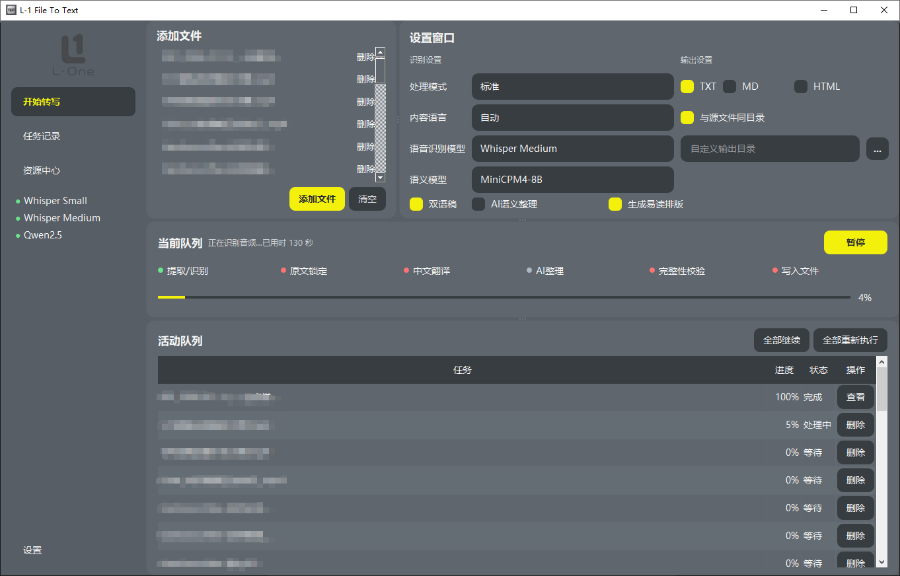
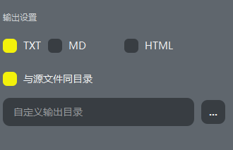
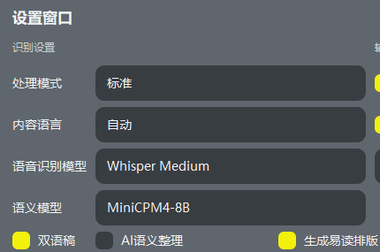

视频需要系统 FFmpeg
安装包不内置 FFmpeg。WAV 音频可直接处理。
L-1 FILE TO TEXT 2.0.8
Windows 10/11 x64 · 174,867,225 bytes · SHA-256 可核验
01 · WHY
THE FIRST PRODUCT
02 · THE SHORTEST PATH

03 · OUTPUT
TXT
纯文本文件。适合直接阅读、搜索和继续整理。

04 · LOCAL BY DEFAULT

05 · BEFORE DOWNLOAD
安装包不内置 FFmpeg。WAV 音频可直接处理。
不包含 CUDA/cuDNN 或 NVIDIA GPU 运行时。
安装包尚未商业代码签名，可能显示未知发布者。
06 · IS IT FOR YOU
适合
不适合
07 · RELEASE VERIFICATION
验证覆盖正式公开包，不代表任意素材的速度或准确度。
08 · INSTALL AND VERIFY
Whisper Small 偏速度，约 510 MB；Whisper Medium 偏识别准确度，约 1.53 GB。
文件大小：174,867,225 bytes
SHA-256
0B4080D6CF4FB9B47FA230CB8AC3C14A37C7202BEDC266869EE8BBEDB71418D8在 PowerShell 运行 Get-FileHash -Algorithm SHA256 -LiteralPath '.\L-1.File.To.Text.Setup.v2.0.8.exe'，不一致时不要安装。
09 · FAQ
应用默认在本机处理媒体与输出，不向 L-One 服务上传媒体文件或转写文本。
没有。模型由用户在资源中心主动下载。
检查 Windows PATH 中是否存在兼容 FFmpeg。WAV 音频不需要 FFmpeg。
不需要。2.0.8 使用 CPU 运行，不含 NVIDIA GPU 运行时。
没有百分百准确承诺。重要原稿需要自行核对。
程序与快捷方式会移除；应用数据、模型目录与输出文件会保留。